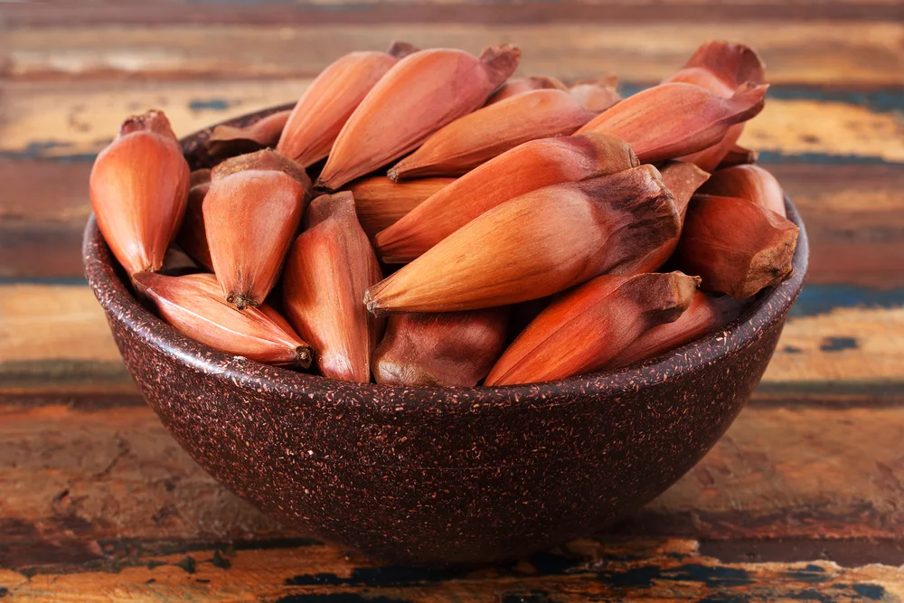
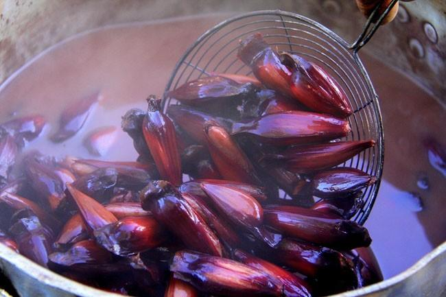
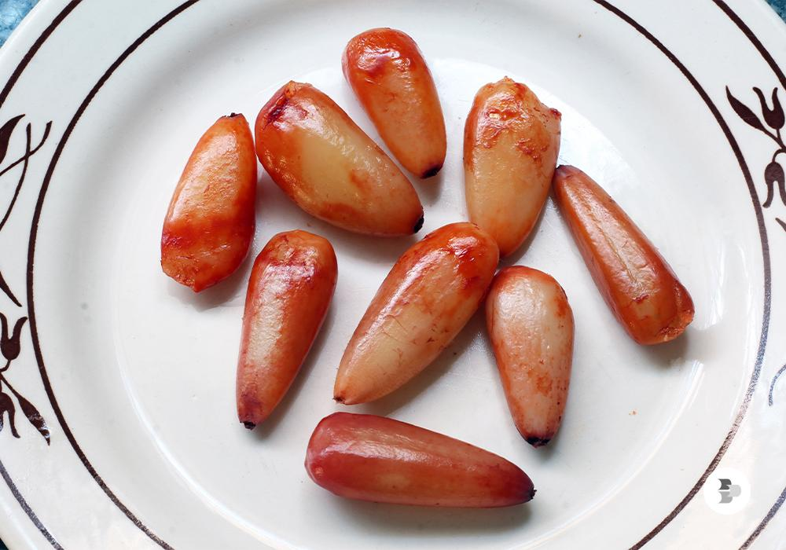

Sobre o pinhão
O pinhão é a semente da araucária, uma árvore muito conhecida na região Sul do Brasil. A araucária possui uma aparência diferente das outras árvores e faz parte da paisagem de várias cidades do Paraná. O pinhão é produzido dentro da pinha e é bastante consumido pelas pessoas durante os meses mais frios do ano.
Esse alimento possui grande importância para a cultura paranaense. Além de fazer parte da alimentação de muitas famílias, o pinhão também é encontrado em festas, feiras e eventos tradicionais. Muitas pessoas têm o costume de cozinhar ou assar o pinhão e consumir junto com a família e os amigos.

História do pinhão
A história do pinhão está ligada aos povos indígenas que já viviam na região Sul do Brasil antes da chegada dos europeus. Esses povos utilizavam o pinhão como alimento e conheciam bem os períodos em que a araucária produzia suas sementes. Dessa forma, o pinhão era uma importante fonte de alimento.
Com o passar dos anos, o costume de consumir o pinhão continuou entre os moradores da região Sul. Ele passou a fazer parte das tradições das famílias e da culinária dos estados do Paraná, Santa Catarina e Rio Grande do Sul.
Atualmente, o pinhão ainda é muito valorizado. Durante a época da colheita, é comum encontrar vendedores comercializando o produto em feiras e mercados. O alimento também é usado em diferentes receitas tradicionais da região.

O pinhão na cultura do Paraná
No Paraná, o pinhão é considerado um alimento muito tradicional. Ele está presente principalmente durante o outono e o inverno, quando as temperaturas ficam mais baixas. Nessa época, muitas pessoas costumam preparar pinhão em casa para comer sozinho ou acompanhado de outras comidas.
O jeito mais comum de preparar o pinhão é cozinhando-o em água ou assando-o. Porém, existem várias outras receitas que podem ser feitas com ele. O pinhão pode ser usado em paçocas, sopas, farofas, bolos e outros pratos.
Além da alimentação, o pinhão também representa uma tradição. Ele reúne famílias e amigos, principalmente em festas típicas e eventos realizados durante o inverno. Por isso, o pinhão é considerado um dos símbolos mais conhecidos da cultura do Paraná.

Curiosidades sobre o pinhão
É mais consumido no inverno
É importante para o Paraná
A araucária e o pinhão fazem parte da identidade cultural do Paraná. A árvore aparece em diferentes paisagens do estado e o pinhão é um alimento que representa costumes passados de geração em geração.
Pode ser usado em várias receitas
Além de ser consumido cozido ou assado, o pinhão pode ser utilizado em pratos doces e salgados. Isso mostra como ele é um alimento versátil e importante para a culinária paranaense.